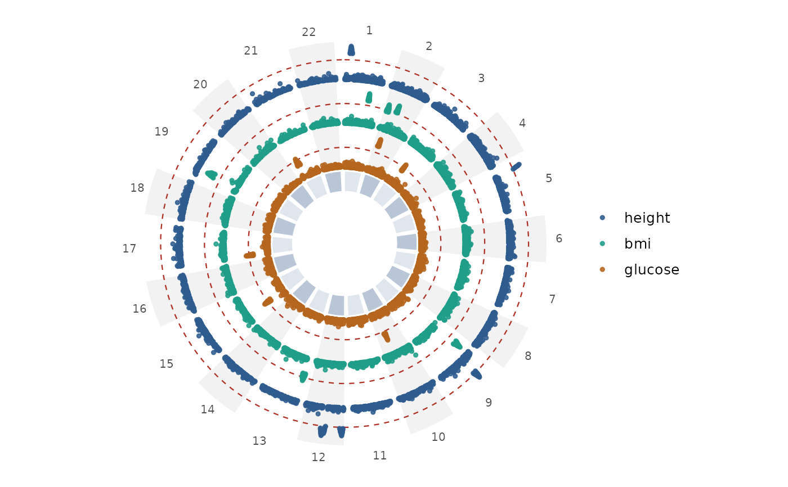
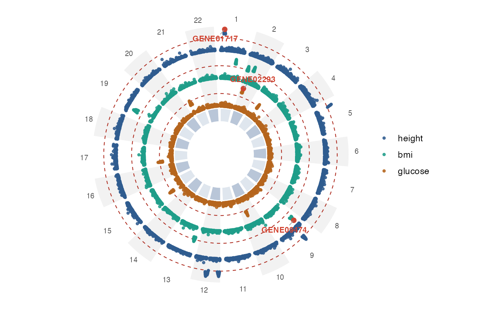
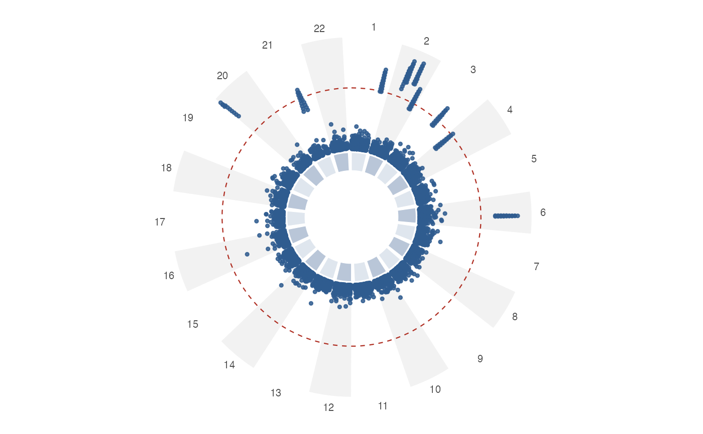

Circular (CMplot-style) plot of GWAS results, with multiple trait rings
Source:R/circular.R
gwas_circular.RdDraws a circular Manhattan plot: chromosomes are arranged once around the
circle and each trait is shown as its own concentric ring, from the outside
in. Genome-wide significance rings and top-marker highlighting are supported
per trait. This is the multi-ring analogue of gwas_manhattan().
Usage
gwas_circular(
data,
trait = "trait",
threshold = 5e-08,
highlight = NULL,
label = TRUE,
label_by = c("gene", "SNP"),
colors = NULL,
highlight_color = "#d1422f",
ideogram = TRUE,
point_size = 0.9,
point_alpha = 0.85,
shared_scale = TRUE,
r_inner = 0.38,
ring_gap = 0.035,
interactive = FALSE,
big_data = FALSE,
raster = NULL,
max_points = NULL,
title = NULL,
subtitle = NULL
)Arguments
- data
A GWAS data frame (passed through
validate_gwas()). For multiple rings it must contain a trait column, or you can bind several single-trait frames together and settrait.- trait
Column that splits the data into rings (default
"trait"when present, otherwise a single ring). SetNULLto force a single ring.- threshold
Genome-wide significance p-value drawn as a ring per trait (default
5e-8;NULLto omit).- highlight
A
highlight_top()spec, a single number (top_n), orNULL. Applied per trait.- label
Logical; label highlighted markers (default
TRUE).- label_by
Column for labels,
"gene"(default) or"SNP".- colors
Optional vector of ring colours (one per trait). Recycled / truncated as needed; defaults to a built-in palette.
- highlight_color
Colour for highlighted markers and labels.
- ideogram
Logical; draw a central chromosome colour band (default
TRUE).- point_size, point_alpha
Size and alpha of points.
Logical; if
TRUE(default) all rings share one \(-\log_{10}(P)\) scale so ring heights are comparable. IfFALSEeach ring is scaled to its own maximum.- r_inner
Innermost radius of the ring stack (0-1); the space inside is used for the ideogram and labels.
- ring_gap
Radial gap between adjacent rings (0-1).
- interactive
Logical; if
TRUE, return an interactivegirafewidget with per-point hover tooltips (requires ggiraph).- big_data
Logical; enable the large-GWAS pipeline — rasterise the rings for a static plot (all points kept, via scattermore) or thin to
max_pointsfor an interactive one. Seegwas_manhattan().- raster
Logical or
NULL; rasterise the point layer.NULLletsbig_datadecide. Requires scattermore.- max_points
Optional integer; thin to about this many points with
thin_gwas()before plotting (all hits kept).- title, subtitle
Optional title and subtitle.
Value
A ggplot2::ggplot object, or a ggiraph::girafe() htmlwidget when
interactive = TRUE.
Examples
data(gwas_multi)
gwas_circular(gwas_multi) # 3 rings

gwas_circular(gwas_multi, highlight = highlight_top(top_n = 1, by = "trait"))

data(gwas_example)
gwas_circular(gwas_example) # single ring
